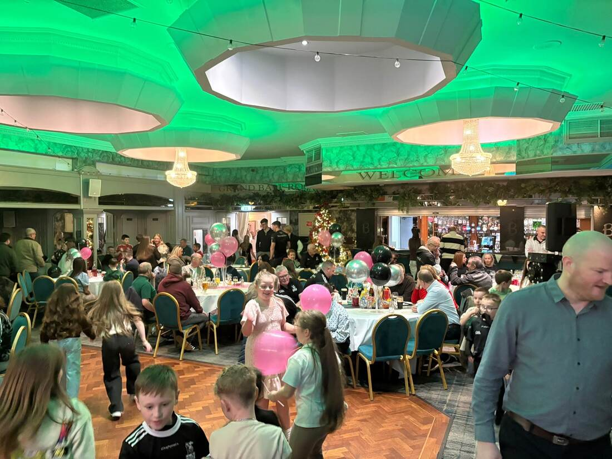
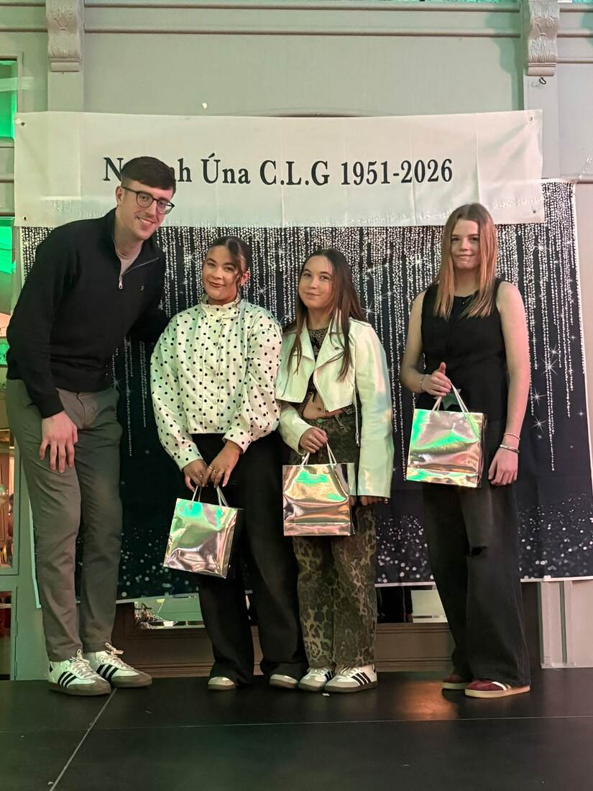

What a lovely weekend for our young Aggies! Roar and Explore was filled with little smiles and big excitement, while the Balmoral brought the whole Aggies family together for a very special celebration. Both events were packed with happy faces and captured everything we love about our children, families, coaches and volunteers.
Fundamentals & U6 · Roar and Explore
Festive fun for our littlest Aggies
Our Fundamentals and U6 boys and girls wrapped up their 2026 adventures with a brilliant Christmas party at Roar and Explore—full of fun, food, laughter and plenty of excited little Aggies!
The fantastic turnout showed just how much our youngest groups have grown. It was lovely to watch the children play with their friends, celebrate together and receive a little recognition for all the enthusiasm they have brought to their first steps in Gaelic games.
A heartfelt thank-you to every parent and guardian for all the lifts, encouragement, sideline smiles and Friday-night support. You helped every child feel welcome and part of our big Aggies family.
And the biggest cheer goes to the children—you brought the energy, the giggles and the magic that made the evening, and the whole year, so special.
Our Clann na Gael U12 boys travelled to Meadowbank on Saturday for the Mid Ulster Blitz, enjoying two hours of football against teams from across Ulster.
The lads enjoyed plenty of football, new challenges and a great day out together. A big well done to every player, coach and family who made the trip and helped finish the football year with a smile.
U12 Girls · Final Game of the Season
A performance to be proud of
For the final U12 girls’ game of the season, that was a performance to be proud of! 💪
Every girl battled brilliantly against a strong and skilful Gort side. Player for player, they competed for every ball and showed real belief in their ability. 🫶🏻
After a difficult previous meeting, the girls stood tall. They matched Gort’s physicality while remaining composed, disciplined and resilient from start to finish.
A fantastic way to end the season—the future is very bright for our juvenile girls’ squad! 🤜🏻
Aggies Abú! 🖤🤍
Juvenile Awards · Balmoral Hotel
One big Aggies family celebration
Sunday’s Juvenile Christmas Party and Presentation at the Balmoral Hotel was a joyful afternoon from start to finish. More than 180 young players, parents, guardians, coaches and supporters gathered to celebrate our wonderful U7–U16 boys and girls.
The room was buzzing with pride, laughter and festive cheer as our young Gaels collected their medals, celebrated with teammates and enjoyed another happy memory in the black and white.
A huge thank-you to our special guest, Louth footballer Dara McDonnell, for joining us and presenting the awards. Dara’s presence helped make the day even more memorable for our young footballers, and we greatly appreciate the time and encouragement he gave to them.
We also thank the Balmoral Hotel for its warm hospitality and every coach who helped organise the evening, present the awards and ensure each team and child was properly recognised.
Special thanks must go to Cathy, Niamh and Julie, whose enormous amount of background work, organisation and preparation made both events possible. Much of that work happened quietly behind the scenes, but its impact was clear for everyone to see.
Thanks also to Erin and Lucy for helping prepare the room, and to David, Roisin and Martine for keeping parents and volunteers supplied with tea and coffee during Friday-night training throughout the year.
To every parent and guardian, thank you for your massive support—not only at the two celebrations, but throughout the entire season. The lifts, encouragement, volunteering and commitment you provide allow our children and teams to flourish.
Above all, the biggest shout-out goes to our brilliant boys and girls. Your friendship, effort, funny moments and wonderful personalities made both celebrations extra special. You are the heart of St Agnes and the future of our club.
We wish every young player, family, coach and volunteer a magical Christmas and a very happy New Year. Enjoy the cosy break, make lots of lovely memories, and we cannot wait to welcome everyone back for more fun and Gaelic games in 2027!
Aggies Abú! 🖤🤍🎄

Celebrating together as one big Aggies family

Recognising our brilliant young playersHappy memories with teammates and families
Take a look back at our wonderful afternoon together.
The main juvenile Friday programme has now finished for 2026. There are no competitive club fixtures confirmed for the week ahead.
Thursday 26 November · U14/U16 Boys Training
6:00–7:00pm · Woodlands 4G
Thursday 26 November · U14 Girls Training
7:00–8:00pm · Woodlands 4G
Important Dates for Your Diary
Club AGM & 2027 Awards Dinner
Club Annual General Meeting Monday 14 December 2026 · 7:00pm Casement Social Club
Nominations and proposals should be submitted using the club form at least five days before the meeting. Please note that this is five days—not the 21 days previously stated on the form. Completed forms can be handed or forwarded to any member of the current Club Committee.
Please make a special effort to attend the AGM. Our club cannot function without the hard work, dedication and participation of all our members—including you.
Save the Date · Annual St Stephen’s Day Match Saturday 26 December 2026 Woodlands 4G Meet at 11:30am · Game finished by 1:00pm
It is the annual Under-35s v Over-35s match—expect a bit of craic, plenty of slagging and some terrible football on show! Come along for a brilliant festive club get-together and see which generation claims the bragging rights. 🖤🤍⚽
St Agnes Club Awards Dinner Friday 5 February 2027 Balmoral Hotel
All player and member trophies from 2026 should be returned to the club in advance of the dinner. Further arrangements will be shared closer to the date.
Friday 27 November
St Agnes Quiz Night
Casement Social Club
Come along, support the club and enjoy a great night with the Aggies family.